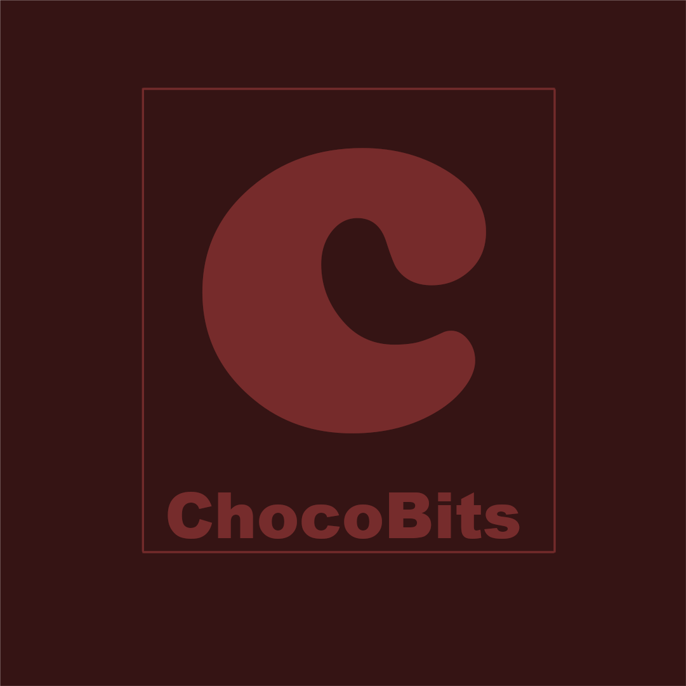

Fundada em 2010, a ChocoBits surgiu no mercado como uma empresa prestadora de serviços alimentícios. "Eu e Ryan fazíamos doces para colegas nossos e aos poucos fomos ganhando uma reputação, em 2010 fundamos oficialmente a ChocoBits" - Sebastian Clark, fundador e atual CEO da ChocoBits
Os negócios da empresa foram expandindo ao longo dos anos, no começo a ChocoBits fornecia apenas doces artesanais e hoje conta com distribuidoras, produção em massa e vários times de pesquisa para sempre melhorar seus produtos e serviços.
Logo da ChocoBits (2010)

Inovação
Em meados de 2016 a empresa passou por reformulações, aumentando a eficiência da gestão e dos funcionários, houve uma melhora considerável da opinião de nossos clientes e de nosso faturamento, nossa logo foi mudada para demonstrar isso.
A ChocoBits planeja criar mais estabelecimentos em novos países e em países já sediados. "Nós possuimos uma vasta rede de estabelecimentos interconectados que geram uma cadeia eficiente de produção e distribuição de nossos serviços e produtos, nosso plano é melhorar o que temos e ampliar nossos horizontes" - Ryan Rockfeller, fundador e CFO da ChocoBits
Logo da ChocoBits (2017)
ChocoBits Inc.® 2010-2021. Todos os direitos reservados.